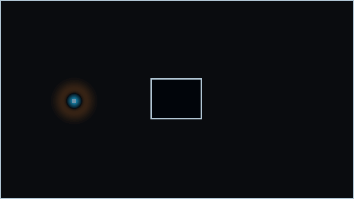

Computational Electromagnetics
Numerical field, mode and residual driven workflows.
Evidence controlled engineering software
Engineering results should carry evidence.
DAD FieldWorks develops evidence controlled engineering software for computational electromagnetics, RF design and signal integrity.
It combines analytical reference kernels, numerical diagnostics and claim aware evidence records so engineering results remain traceable before they are trusted.
Current public state: bounded internal alpha analytical reference evidence only. No external validation claim. No production readiness claim.

What is being built
DAD FieldWorks is being developed as a software platform for engineering workflows where computed results are not treated as trustworthy merely because they look plausible or produce a number. Results are accompanied by evidence records, source boundaries, reproducibility metadata and claim limits.
Technology areas
Numerical field, mode and residual driven workflows.
Resonator, cavity and wave structure diagnostics.
Analytical reference kernels for impedance, width synthesis and coupled line derived quantities.
Result records, trust states, reproducibility metadata and claim boundaries.
Engineering examples
These examples show source backed internal analytical reference models from DAD FieldWorks Signal Integrity work. They are not external validation results, not production use authorization and not full wave EM simulations.
No engineering result is shown until the public data file is loaded.
Evidence model
A DAD FieldWorks result remains bounded until evidence records define what it may claim.
Current public state
Roadmap
Signal Integrity analytical reference kernels and evidence records.
Documentation, example coverage, stronger result contracts and public safe engineering dashboards.
Evidence controlled computational electromagnetics and RF engineering platform direction, with broader solver workflows and external validation only when evidence supports them.
About
DAD FieldWorks is developed by Harun Aktas as an independent software engineering initiative. The project is currently in the transition from private research and development toward a public technical presence and future company formation.
The work combines software development, computational electromagnetics, RF engineering, signal integrity and evidence controlled engineering workflows.
Technical materials